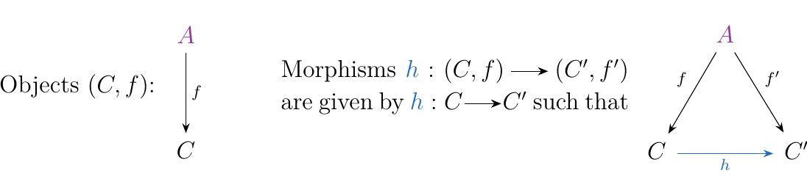

2.5. Slice and Comma Categories.
In this section we introduce comma categories, which serve as a very useful categorical construction. The reason why it is so useful is because the notion of a comma category has the potential to simplify an otherwise complicated discussion. As they can be constructed in any category, and because they contain a large amount of useful data, they are frequently used as an intermediate step in more complex categorical constructions. Thus, while the concept is "simple," they nevertheless appear in all kinds of complicated discussions in category theory.
Let \(\cc\) be a category and suppose \(\textcolor{Purple}{A}\) is an object of \(\cc\). We define the **slice category (with \(\textcolor{Purple**{A}\) over \(\cc\))}, denoted \((\textcolor{Purple}{A} \downarrow\cc)\), as the category
- Objects. All pairs \((C, f: \textcolor{Purple}{A} \to C)\) for all \(C \in \cc\) and morphims \(f:\textcolor{Purple}{A} \to C\). In other words, the objects are all morphisms in \(\cc\) which originate at \(\textcolor{Purple}{A}\).
- Morphisms. For two objects \((C, f:\textcolor{Purple}{A}\to C)\) and \((C', f': \textcolor{Purple}{A} \to C')\), we define
as a morphism between the objects, where \(h: C \to C'\) is a morphism in our category such that \(f' = h \circ f\). Alternatively we can describe the homset more directly:
At this point you may be a bit overloaded with notation if this is the first time you've seen this before. You need to figure out how this is a category (what's the identity? composition?) and ultimately why you should care about this category. To aid your understanding, a picture might help.
We can represent the objects and morphisms of the category \((\textcolor{Purple}{A} \downarrow \cc)\) in a visual manner.
 Now, how does composition work? Composition of two composable morphisms \(h : (f, C) \to (f', C')\) and \(h' : (f', C') \to (f'', C'')\) is given by \(h' \circ h : (f, C) \to (f'', C'')\) since clearly
We can visually justify composition as well. If we have two commutative diagrams as on the left, we can just squish them together to get the final commutative diagram on the right.
Hence, we see that \(h' \circ h :(f, C) \to (f'', C'')\) is defined whenever \(h'\) and \(h\) are composable as morphisms of \(\cc\).
One use of comma categories is to capture and generalize the notion of a pointed category. Such pointed categories include the category of pointed sets \(**Set**^*\) or the category of pointed topological spaces \(**Top**^*\), etc.
We've seen, in particular on the discussion of functors, the necessity for pointed categories. For example, we cannot discuss "the" fundamental group \(\pi_1(X)\) of a topological space \(X\) (unless \(X\) is path connected, but still only up to isomorphism). To discuss a fundamental group in a topological space \(X\), one needs to select a base point \(x_0\). As we saw in Example \ref{example:fundamental_group}, \(\pi_1\) is not a functor \(**Top** \to **Grp**\), but is rather a functor
where \(**Top**^*\), which consists of pairs \((X, x_0)\) with \(x_0 \in X\), is the category of pointed topological spaces.
Similarly, it makes no sense to talk about "the" tangent plane of a smooth manifold. Such an association requires the selection of a point \(p \in X\) to calculate \(T_p(M)\). So, as we saw in Example \ref{example:manifold_tangent_plane}, this process is not a functor from \(**DMan**\) to \(**Vect**\), but is rather a functor
where \(**DMan**^*\), which consists of pairs \((M, p)\) with \(p \in M\), is the category of pointed smooth manifolds. This now motivates the next two examples.
Consider the category \(**Top**^*\) where
- Objects. The objects are pairs \((X, x_0)\) with \(X\) a topological space and \(x_0 \in X\).
- Morphisms. A morphism \(f: (X, x_0) \to (Y, y_0)\) is any continuous function \(f: X \to Y\) such that \(y_0 = f(x_0)\).
Recall that the one point set \(\{\bullet\}\) is trivially a topological space. Then we can form the category \((\{\bullet\}\downarrow **Top**)\). The claim now is that
Why? Well, an object of \((\{\bullet\}\downarrow **Top**)\) is simply a pair \((X, f: \{\bullet\} \to X)\). Observe that
for some \(x_0 \in X\). So, the pair \((X, f: \{\bullet\} \to X)\) is logically equivalent to a pair \((X, x_0)\) with \(x_0 \in X\). \textcolor{NavyBlue}{That is, a continuous function from the one point set into a topological space \(X\) is equivalent to simply selecting a single point \(x_0 \in X\)}. Hence, on objects it is clear why we have an isomorphism.
Now, a morphism in this comma category will be of the form \(p: (X, f_1: \{\bullet\} \to X) \to (Y, f_1: \{\bullet\} \to Y)\). Specifically, it is a continuous function \(p: X \to Y\) such that the diagram below commutes.
In other words, if \(f_1(\bullet) = x_0\) and \(f_2(\bullet) = y_0\), it is a continuous function \(p: X \to Y\) such that \(f(x_0) = y_0\). This is exactly a morphism in \(**Top**^*\)! We clearly have a bijection as claimed.
The above example generalizes to many pointed categories, some of which are
- \(**DMan**^* \cong (\bullet \downarrow **DMan**)\)
- \(**Set**^* \cong (\bullet \downarrow **Set**)\)
- \(**Grp**^* \cong (\bullet \downarrow **Grp**)\)
We now briefly comment for any slice category \((A \downarrow \cc)\) built from a category \(\cc\), we can construct a "projection" functor
where on objects \(P(C, f: A \to C) = C\) and on morphisms
\(P(h:(C, f) \to (C', f'))= h: C \to C'\). Clearly, this functor is
faithful, but it is generally not full. Such a projection functor
is used in technical constructions involving slice categories as
it has nice properties; we will make use of it later when we discuss
limits.
Next,we introduce how we can also describe the category of an objects under another category.
Let \(\cc\) be a category, and \(\textcolor{Purple}{B}\) an object of \(\cc\). Then we define the **category \(\textcolor{Purple**{B}\) under \(\cc\)}, denoted as \((\cc \downarrow \textcolor{Purple}{B})\) as follows.
- Objects. All pairs \((C, f)\) where \(f: C \to \textcolor{Purple}{B}\) is a morphism in \(\cc\). That is, the objects are morphisms ending at \(\textcolor{Purple}{B}\).
- Morphisms. For two objects \((C, f: C \to \textcolor{Purple}{B})\) and \((C', f': C' \to \textcolor{Purple}{B})\), we define
to be a morphism between the objects to correspond to a morphism \(\textcolor{NavyBlue}{h}:C \to C'\) in \(\cc\) such that \(f = f' \circ h\).
Composition of functions \(\textcolor{NavyBlue}{h}: (f, C) \to (f', C')\) and \(\textcolor{NavyBlue}{h'}: (f', C') \to (f'', C'')\) exists whenever \(\textcolor{NavyBlue}{h'} \circ \textcolor{NavyBlue}{h}\) is defined as morphisms in \(\cc\). Again, we can represent the elements of the category in a visual manner
The following is a nice example that isn't traditionally seen as an example of a functor.
Let \((G, \cdot)\) and \((H, \cdot)\) be two groups, and consider a group homomorphism \(\phi: (G, \cdot) \to (H, \cdot)\). Abstractly, this is an element of the comma category \((**Grp** \downarrow H)\).
Now for for every group homomorphism, we may calculate the kernal of \(\ker(\phi) = \{g \in G \mid \phi(g) = 0\}\). This is always a subgroup of \(G\). What is interesting is that, from the perspective of slice categories, this process is functorial:
To see this, we have to understand what happens on the morphisms. So, suppose we have two objects \((G, \phi: G \to H)\) and \((K, \psi: K \to H)\) of \((**Grp**\downarrow H)\) and a morphism \(h: G \to K\) between the objects.
Then we can define \(\ker(h): \ker(\phi) \to \ker(\psi)\), the image of \(h\) under the functor, to be the restriction \(h|_{\text{ker}(\phi)}: \ker(\phi) \to \ker(\psi)\). This is a bonafied group homomorphism: by the commutativity of the above triangle, if \(g \in G\) then \(\phi(g) = \psi(h(g))\). Hence, if \(\phi(g) = 0\), i.e., \(g \in \ker(\phi)\), then \(\psi(h(g)) = 0\), i.e., \(h(g) \in \ker(\psi)\). So we see that our proposed function makes sense.
What this means is that the commutativity of the above triangle forces a natural relationship between the kernels of \(\phi\) and \(\psi\); not only as a function of sets, but as a group homomorphism. Therefore, the kernel of a group homomorphism is actually a functor from a slice category.
In geometry and topology, one often meets the need to define a \((-)\)-bundle. By \((-)\) we mean vector, group, etc. That is, we often want topological spaces to parameterize a family of vector spaces or groups in a coherent way. \begin{center}
\end{center} For example, on the above left we can map the Mbius strip onto \(S_1\) in such a way that the inverse image of each \(x \in S_1\) is homeomorphic to the interval \([0, 1]\). Hence, each point of \(x \in S_1\) carries the information of a topological space, specifically one of \([0, 1]\).
On the right, we can recall that \(S^2\) is a differentiable manifold, and so each point \(p\) has a tangent plane \(T_p(S^2)\), which is a vector space. Hence every point on \(S^2\), or more generally for any differentiable manifold, carries the information of a vector space.
In general, for a topological space \(X\), we define a bundle over \(X\) to be a continuous map \(p: E \to X\) with \(E\) being some topological space of interest. If \(p: E \to X\) an \(p': E' \to X\) are two bundles, a morphism of bundles \(q :p \to p'\) is given by a continuous map \(q: E \to E'\) such that
Hence we see that a bundle over a topological space \(X\) is an element of the comma category \(**Top**/X\), and a morphism of bundles is a morphism in the comma category. We therefore see that \(**Top**/X\) can be interpreted as the category of bundles of \(X\).
One particular case of interest concerns vector bundles. Let \(E, X\) be topological spaces. Recall that a vector bundle consists of a continuous map \(\pi: E \to X\) such that
- 1. \(\pi^{-1}(x)\) is a finite-dimensional vector space over some field \(k\)
- 2. For each \(p \in X\), there is an open neighborhood \(U_{\alpha}\) and a homeomorphism
with \(n\) some natural number. We also require that \(\pi \circ \phi_{\alpha} = 1_{U_\alpha}\).
As we might expect, a morphism of vector bundles between \(\pi_1: E \to X\) and \(\pi_2: E' \to X\) is given by a continuous map \(q: E \to E'\) such that for each \(x \in X\), \(q\big|_{\pi_1^{-1}(x)}: \pi_1^{-1}(x) \to \pi_2^{-1}(x)\) is linear map between vector spaces.
To realize this in real mathematics, we can take the classic example of the tangent bundle on a smooth manifold \(M\) (if you've seen this before, hopefully it is now clear why the word "bundle" is here). In differential geometry this is defined as the set
where we recall that \(T_p(M)\) is the tangent (vector) space at a point \(p \in M\). Since \(M\) is a smooth manifold there is a differentiable structure \((U_\alpha, \bm{x}_\alpha: U_\alpha \to M)\) which allow us to define a map
This actually provides a differentiable structure on \(TM\), demonstrating it too is a smooth manifold (see Do Carmo). Hence we see that \(TM\) is in fact a topological space. We then see that the mapping \(\pi: TM \to M\) where
is a continuous mapping. Hence we've satisfied both (1.) and (2.) in the the definition of a vector bundle. The other properties can be easily verified so that this provides a nice example of a vector bundle.
We can also formulate categories of objects under and over functors.
Let \(\cc\) be a category, \(C\) an object of \(\cc\) and \(F: \bb \to \cc\) a functor. Then we define the category \(C\) over the functor \(F\), denoted as \((C \downarrow F)\), as follows.
- Objects. All pairs \((f, B)\) where \(B \in \text{Obj}(\bb)\) such that
where \(f\) is a morphism in \(\cc\). * Morphisms. The morphisms \(h: (f, B) \to (f', B')\) of \((C \downarrow F)\) are defined whenever there exists a \(h:B \to B'\) in \(\bb\) such that \(f' = F(h) \circ f\).
Representing this visually, we have that
Composition of the morphisms in \((C \downarrow F)\) simply requires composition of morphisms in \(\bb\).
One can easily construct the category \(C\) under the functor \(F\), \((F \downarrow C)\), in a completely analogous manner as before. But we'll move onto finally defining the concept of the comma category.
Let \(\bb, \cc, \dd\) be categories and let \(F: \bb \to \dd\) and \(G:\cc \to \dd\) functors. That is,
Then we define the comma category \((F \downarrow G)\) as follows.
- Objects. All pairs \((B, C, f)\) where \(B, C\) are objects of \(\bb, \cc\), respectively, such that
where \(f\) is a morphism in \(\dd\). * Morphisms. All pairs \((h, k) : (B, C, f) \to (B', C', f')\) where \(h: B \to B'\) and \(k: C \to C'\) are morphisms in \(\bb, \cc\), respectively, such that \
As usual, we can represent this visually via diagrams:
where in the above picture we have that \((h, k):(B, C, f) \to (B', C', f')\). Since functors naturally respect composition of functions, one can easily define composition of morphism \((h, k)\) and \((h', k')\) as \((h \circ h', k \circ k')\) whenever \(h \circ h'\) and $ k\circ k'$ are defined as morphisms in \(\bb\) and \(\cc\), respectively. \vspace{0.5cm}
{\large Exercises \vspace{0.5cm}}
- *1.* Let \(\cc\) be a category with initial and terminal objects \(I\) and \(T\).
- i. Show that \((\cc \downarrow T) \cong \cc\).
- i. Also show that \((I \downarrow \cc) \cong \cc\).
- *2.* Consider again a group homomorphism \(\phi: G \to H\), but this time consider the image \(\im(\phi) = \{\phi(g) \mid g \in G\}\). Show that this defines a functor
where on morphisms, a morphism
is mapped to the restriction \(h|_{\text{Im}(\phi)}: \im(\phi) \to \im(\psi)\).
In some sense, this is the "opposite" construction of the kernel functor we introduced. Instead of taking the kernel of a group homomorphism, we can take its image. * *3. Here we prove that the processes of imposing the induced topology and the coinduced topology are functorial. Moreover, the correct language to describe this is via slice categories. * i*. Let \(X\) be a set and \((Y, \tau)\) a topological space. Denote \(U: **Top** \to **Set**\) to be the forgetful functor. Given any function \(f: X \to U(Y)\), we can use the topology on \(Y\) to impose a topology \(\tau_X\) on \(X\):
$$
\tau_X = \{U \subset X \mid f(U) \text{ is open in }Y\}.
$$
This is called the **induced topology on** $X$.
So, we see that (by abuse of notation) the function $f: X \to U(Y)$
is now a continuous function $f: (X, \tau_X) \to (Y, \tau_Y)$.
Prove that this process forms a functor $\text{Ind}: (**Top**\downarrow U(Y)) \to (**Top**\downarrow Y)$.
* ***ii*.** This time, let $(X, \tau)$ be a topological space, $Y$ a set,
and consider a function $f: U(X) \to Y$. We can similarly impose a
topology $\tau_Y$ on $Y$:
$$
\tau_Y= \{ V \subset Y \mid f^{-1}(V) \text{ is open in }X \}.
$$
This is called the **coinduced topology on** $Y$.
Show that this is also a functorial process.
-
*4.*
- i. Let \(X\), \(Y\) be topological spaces with \(\phi: X \to Y\) a continuous function. Show that this induces a functor \(\phi_*: (**Top**\downarrow X) \to (**Top**\downarrow Y)\) where on objects \((f: E \to X) \mapsto (\phi \circ f: E \to Y)\).
- ii. Let \(\cc\) be a category. Show that we generalize (i) to define a functor
\[ (\cc \downarrow -): \cc \to **Cat** \]where \(A \mapsto (\cc \downarrow A)\). * ii. Let \(**Cat**_*\) be the pointed category of categories which we describe as * Objects. All pairs \((\cc, A)\) with \(\cc\) a category and \(A \in C\) * Morphisms. Functors \(F\) which preserve the objects. * *5. In this exercise we'll see that slice categories describe intervals for thin categories. * i.** Regard \(\mathbb{R}\) as a thin category, specifically as one with a partial order. For a given \(a \in \rr\), describe the thin category \((a \downarrow \mathbb{R})\). * ii.* Suppose \(P\) is a partial order (so that \(p \le p'\) and \(p' \le p\) implies \(p = p'\)). Describe in general the categories \((p \downarrow P)\) and \((P \downarrow p)\).